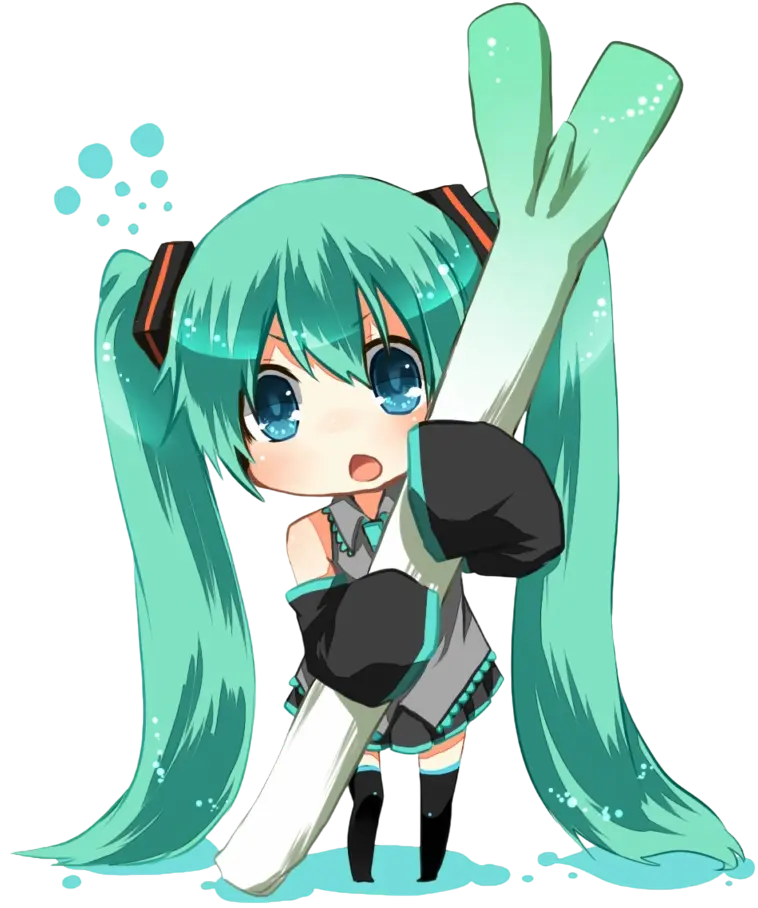

Welcome to VRT, the Vocaloid Racing Team — where speed meets self-expression. We are a community of racers who love Vocaloid culture and believe in being unapologetically ourselves, on and off the track.
Founded by passionate fans and sim racers, VRT is all about inclusivity, creativity, and performance. Whether you're competitive or casual, here you're part of something colorful, bold, and unique — just like Miku herself.
Bathurst 12hr Winners: Tom, Layla
ACM & TOGA GT4 Champion: Albert/Oscar
Countless Daily & Weekly Race Wins
Our team is made up of people who may not fit perfectly in the greater community, whether you are just more outgoing, a nerd or a total weeb. We aim to create a safe space for all drivers that aim to make it pro in the sim racing world
16 year old Australian. Mechanical Engineering student hoping to make it big in the racing scene. Bathurst 12hr Race Winner
22 year old American. The team's livery maker and second-in-charge. Bathurst 12hr Race Winner
17 year old Dane. AMR fanatic and general racing enthusiast. ACC league champion and 24h For Anna charity race winner
If you're looking for a team that celebrates individuality, style, and community, come race with us!
Join our Discord Follow our SimGrid Subscribe to our Youtube 